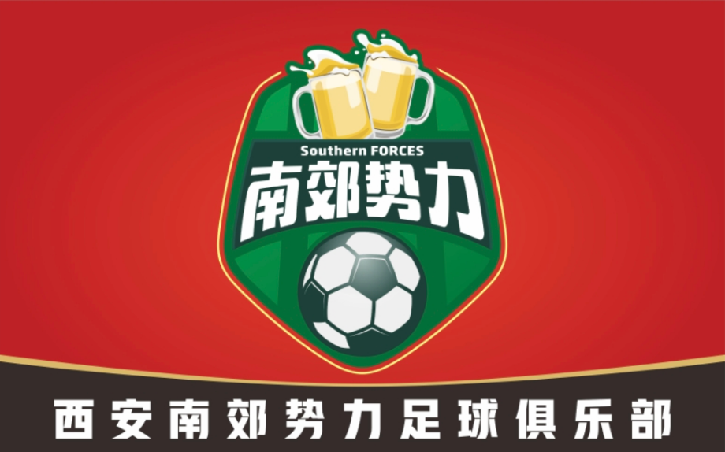

郭楠烤肉杯 · 第六届会员联赛
南郊势力13 : 5长安兄弟连
Our FC · 自家球队
本队由大秦南郊势力球迷组织成立，因观球相识，因踢球相聚！看台上是助威方阵，球场上是并肩战友——白天在看台上吼的，就是晚上在场上拼的。
从看台上齐声呐喊的球迷，
到球场上并肩奔跑的队友。
场上奋力拼抢，场下畅聊足球。
以球迷之名，共赴绿茵之约！
Staff · 管理团队
球队负责人、主教练、领队、副领队、队医——球场上的另一条战线。
Squad · 球员名单
西安南郊势力足球俱乐部球员名单——生于看台，战在球场。
Results · 战报
2024–2025 赛季大秦军团会员足球联赛战绩，胜负有记。
郭楠烤肉杯 · 第六届会员联赛
南郊势力13 : 5长安兄弟连
郭楠烤肉杯 · 第六届会员联赛
南郊势力5 : 7护狼战斗组
郭楠烤肉杯 · 第六届会员联赛
南郊势力2 : 4北郊秦刃
郭楠烤肉杯 · 第五届会员联赛
南郊势力3 : 2北部联盟
郭楠烤肉杯 · 第五届会员联赛
南郊势力7 : 1临商 FC
郭楠烤肉杯 · 第五届会员联赛
南郊势力1 : 7护狼战斗组


Training · 训练与征召